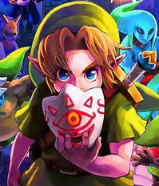

About Danilo Montes

*Why make this at all? I've wanted to organize things about me in a document, and combining it with coding makes it even better.
- God
- God is the reason I am on this earth right now. He is the reason I am creating this page. He had given me all my talents, and I am grateful for them every single day. The people he has placed in my life have both supported and doubted me, but he has given me the strength to move on and focus on what is right. Without his guidance, I would be lost. Everyday I strive to leave the people around me with a little more than what they started the day with, whether that be through laughter, knowledge, wisdom, or other means.
I have been blessed, and I only see it fit to act upon that blessing and help others out where I understand and they do not. I love when I can help others get to understandings that they did not have before. It brings me joy to see that not only to I have knowledge, but I can transfer that same knowledge to other people, so that they can learn and understand what they did not before.
- Coding
- I have always seen myself as a behind the scenes person. I helped out as stage crew in my 5th grade play, and I loved it. I don't really like being the center of attention, but I love doing my part in the background to help the person in the front succeed. With coding, I can do the behind the scenes work for websites, games, phones, and more. I also have always been interested in how things work, and where things come from. Through coding, I can see how things work and what makes things do what they do, and I can even manipulate it myself. My ultimate goal in coding is helping to create a game that people enjoy from the bottom of their hearts. Games have always been sources of happiness for me whenever I have felt down and felt that nothing else could bring my mood back up. Being part of a team that creates a game that bring happiness to lots of people is my goal, and I would love to see it happen.
- Piano
- Ever since I started to listen to music, I wondered what instrument would fit me the best. I played the double bass for a few years in elementary school,
but I didn't stick when I moved. It took me about three years to begin playing another instrument, and it ended up being the piano. Drawn to its beautiful
sound, I began playing the piano, and it has stuck with me to this day.
- Games
- Whenever I can't find another way to cheer myself up, games have always been there to do that for me. They have brought me to people that I would never have known existed if I had not shared the same passion for a game that they did. Games bring together people from all backgrounds of life, starting relationships that might not have ever started had the game not existed.
- The Legend of Zelda
- Pokemon
| Test 1 |
Test 2 |
Test 3 |
| Under Test 1 |
Under Test 2 |
Under Test 3 |
| Under Under Test 1 |
Under Under Test 2 |
Under Under Test 3 |